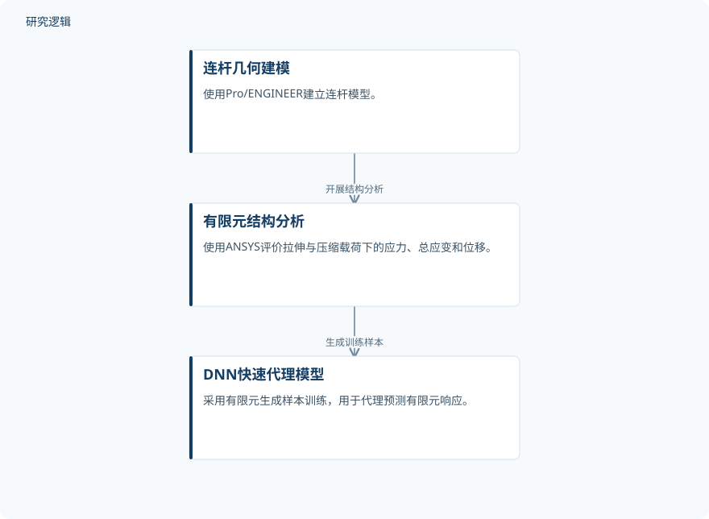

摘要解读
量子增强与机器学习框架用于连杆高精度疲劳寿命预测及结构分析
Quantum-Enhanced and Machine Learning Framework for High-Accuracy Fatigue Life Prediction and Structural Analysis of Connecting Rod
解读更新 2026-11-10 16:57 · 依据公开摘要整理，未核验全文细节
连杆选材如何兼顾轻量化、结构响应与疲劳安全？这项研究将有限元、深度神经网络和量子启发优化纳入同一框架。阅读价值在于辨清：代理模型的应力预测精度，与材料疲劳寿命判断，分别提供了什么证据。
文章目录
连杆选材：功重比需求下的疲劳约束
连杆承担活塞往复运动与曲轴旋转运动之间的传递。更高功重比的需求，推动研究者重新考察传统铝合金、钛合金和合金钢的材料选择。本文面向110 cc四冲程汽油发动机连杆，尝试借助多层计算框架筛选合适材料，而非仅比较单一静力学指标。
有限元提供样本，代理模型与优化分工
研究首先使用Pro/ENGINEER建模，再通过ANSYS有限元分析，评价拉伸与压缩载荷下的von Mises应力、总应变和位移。深度神经网络以1,500个有限元生成样本训练，承担快速代理预测；这些是仿真样本，不能视为独立实物试验。
材料决策部分采用Takagi–Sugeno模糊推理进行多准则排序，并以QAOA搜索合金候选及成本—性能比构成的多维设计空间。该算法运行于IBM Qiskit Aer状态向量模拟器，属于摘要所称的量子启发优化，不能据此宣称已实现量子硬件优势。
疲劳寿命计算采用Basquin应力—寿命关系，并结合Goodman平均应力修正与Miner线性损伤累积法。这里需要区分：神经网络用于代理有限元响应，疲劳评价则依赖摘要列出的疲劳关系与损伤计算方法。
依据摘要整理的建模与代理预测示意


仅展示摘要明确给出的几何建模、有限元分析与代理模型训练关系，不是论文原图，也不代表完整优化流程。
下载 SVG图示关系说明
实线表示相邻阶段的信息流，虚线表示跨阶段联系或反馈。
连杆几何建模 → 有限元结构分析：开展结构分析；有限元结构分析 → DNN快速代理模型：生成训练样本
应力预测吻合度高，疲劳评价推荐合金钢
摘要报告，DNN应力预测的R2 = 0.987、RMSE = 2.41 MPa、MAPE = 0.71%，表现优于随机森林与XGBoost基线。这些指标说明其对有限元结果的复现能力，不能直接当作实物疲劳寿命预测精度。
疲劳评价显示，AA-7075工作状态超过其疲劳极限，疲劳安全系数为0.78；42CrMo4合金钢的疲劳安全系数为1.97，被判为具有无限寿命表现并获推荐。“无限寿命”应理解为本文疲劳评价条件下的判定，而非任意服役环境中的永久安全承诺。
摘要尚不能界定泛化能力与验证范围
仅凭摘要，无法判断仿真样本如何覆盖载荷和材料空间、训练测试如何划分，以及是否存在独立验证。摘要也未给出基线模型的具体误差、优化层的独立贡献或计算耗时，因此不能量化整体加速幅度或归因于量子启发层。
载荷谱、边界条件、材料疲劳参数与实物试验验证范围，同样无法由当前资料确认。这些属于摘要信息边界，不代表论文没有开展相关工作；选材推荐也不宜脱离原有评价条件直接推广。
阅读启发：沿着预测误差追问疲劳结论
阅读启发：进一步阅读时，可重点追问代理模型的应力误差如何影响疲劳安全判断，以及模糊排序和优化搜索如何权衡成本与性能。对结构疲劳与可靠性研究而言，比单独关注拟合指标更重要的，是厘清从仿真响应到选材结论的证据链。
以上为本站阅读启发与建议，不是论文已验证的结论。